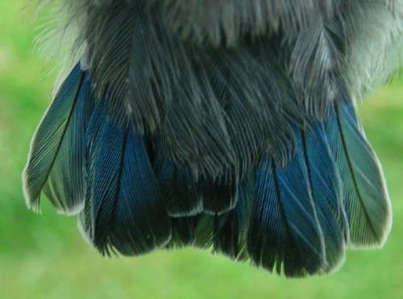

Bird, (class Aves), any of the more than 10,400 living species unique in having
feathers, the major characteristic that distinguishes them from all other animals. A more-elaborate
definition would note that they are warm-blooded vertebrates more related to reptiles than to mammals
and that they have a four-chambered heart is (as do mammals), forelimbs modified into wings (a trait shared with bats)
, a hard-shelled egg, and keen vision,
 the major sense they rely on for information about the environment. Their sense
of smell is not highly developed,and auditory range limited. Most birds are diurnal in habit. More than
1,000 extinct species have been identified from fossil remains.
the major sense they rely on for information about the environment. Their sense
of smell is not highly developed,and auditory range limited. Most birds are diurnal in habit. More than
1,000 extinct species have been identified from fossil remains.
Many social species preserve knowledge across generations (culture). Birds are social, communicating with visual
signals, calls, and songs, and participating in such behaviour as cooperative breeding and hunting, flocking, and
mobbing of predators. The vast majority of bird species are socially (but not necessarily sexually) monogamous,
usually for one breeding season at a time, sometimes for years, and rarely for life. Other species have breeding
systems that are polygynous (one male with many females) or, rarely, polyandrous (one female with many males).
Birds produce offspring by laying eggs which are fertilised through sexual reproduction. They are usually laid in
a nest and incubated by the parents. Most birds have an extended period of parental care after hatching.
Wings
Bird wings are a paired forelimb in birds. The wings give the birds the ability to fly, creating lift.
Terrestrial flightless birds have reduced wings or none at all (for example, moa). In aquatic flightless birds (penguins), wings can serve as flippers.[1]

Eyes
Vision is the most important sense for birds, since good eyesight is essential for safe flight.
Birds have a number of adaptations which give visual acuity superior to that of other vertebrate groups; a pigeon has been
described as "two eyes with wings".[1] Birds are theropods,[2][3] and the avian eye resembles that of other sauropsids,
with ciliary muscles that can change the shape of the lens rapidly and to a greater extent than in the mammals.

Beak
The beak, bill, or rostrum is an external anatomical structure found mostly in birds, but also in
turtles, non-avian dinosaurs and a few mammals. A beak is used for pecking, grasping, and holding (in probing for food, eating, manipulating
and carrying objects, killing prey, or fighting), preening, courtship, and feeding young. The terms beak and rostrum are also used to
refer to a similar mouth part in some ornithischians, pterosaurs, cetaceans, dicynodonts, rhynchosaurs, anuran tadpoles, monotremes
(i.e. echidnas and platypuses, which have a beak-like structure), sirens, pufferfish, billfishes and cephalopods.

Claws
All birds have claws at the end of the toes. The claws are typically curved and the radius of curvature tends
to be greater as the bird is larger although they tend to be straighter in large ground dwelling birds such as ratites.[22]
Some species (including nightjars, herons, frigatebirds, owls and pratincoles) have comb-like serrations on the claw of the
middle toe that may aid in scratch preening.[23]

Feathers
Feathers are epidermal growths that form a distinctive outer covering, or plumage, on both avian
(bird) and some non-avian dinosaurs and other archosaurs. They are the most complex integumentary structures found in vertebrates[1][2]
and an example of a complex evolutionary novelty.[3] They are among the characteristics that distinguish the extant birds from other
living groups.[4]
Tail
Birds have tails, bats do not. Does this fundamental difference in flight morphology reveal a difference
in flight capability, and if so are birds or bats better fliers? I use Munk's stagger theorem, and Prandtl's relation for the
induced drag of a biplane to show that for a given lift, and given wingspan, the induced drag of the wing-tail combination
is lower that the induced drag of a wing alone. However the same reduction in induced drag could be achieved by slightly
increasing the wingspan.
